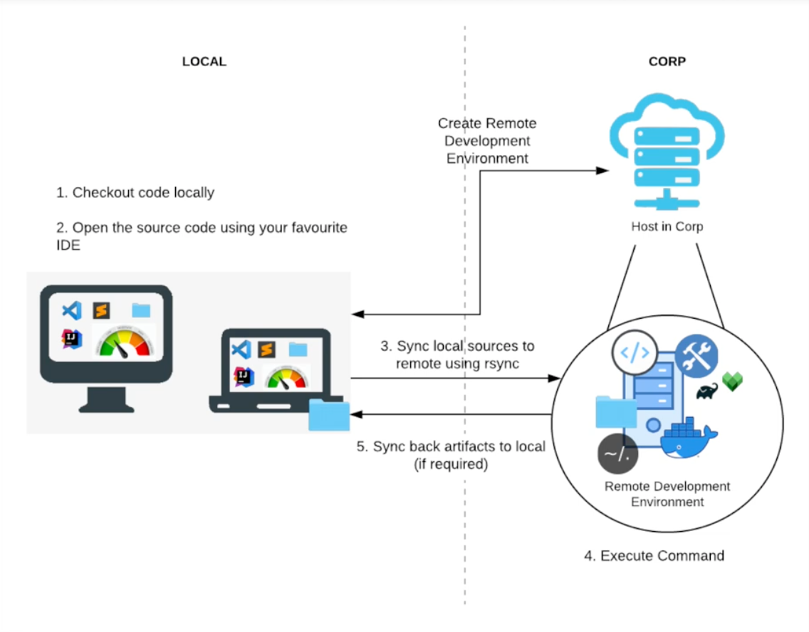
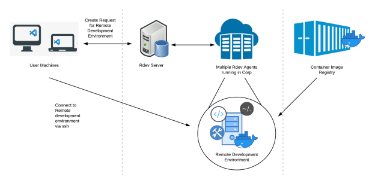
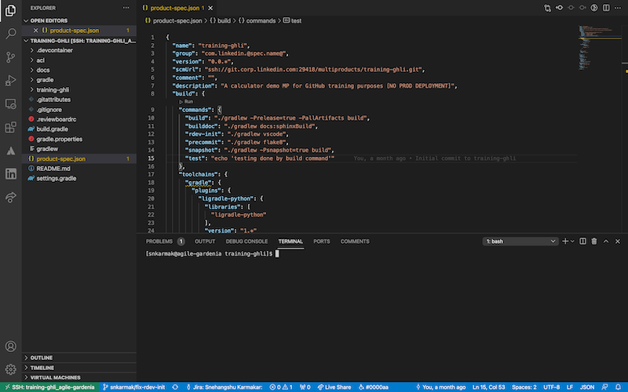
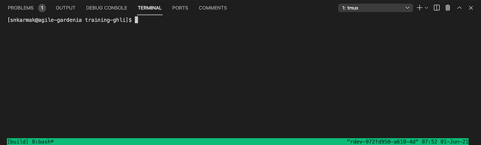
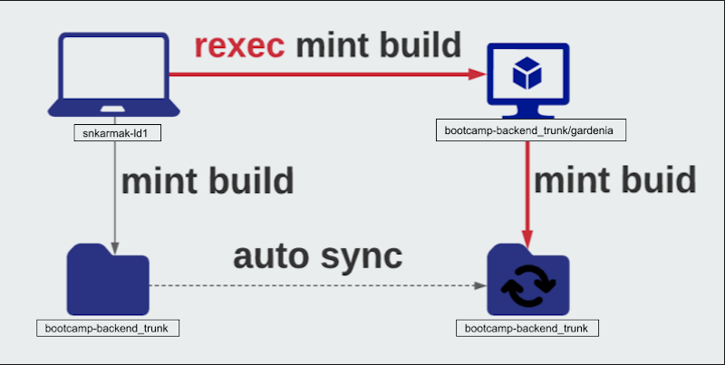
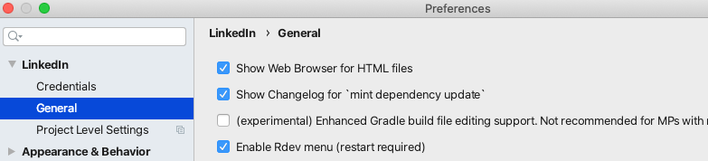
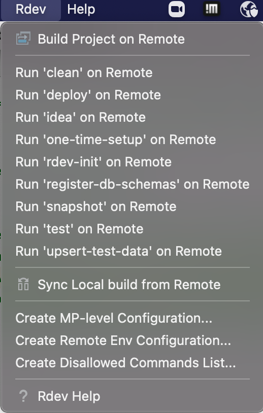

Remote Development @ LinkedIn
Ability to run code in a controlled environment somewhere in the cloud
Presented by Snehangshu Karmakar / @snkarmakar
Agenda
- Why rdev?
- How to use rdev?
- Demo
- rdev vs rexec
- Demo
Why rdev?
Remote development aims to provide:
- Consistent build environment
- Predictable fast builds
- Easy to setup

How does it help?

Architecture

How to use rdev?
Creating a new rdev environment
Before you run the command, ensure that your multiproduct is onboarded to rdev.
$ rdev create <MP-NAME> --branch <BRANCH-NAME>
mint rdev-init initializes the environment (customize based on MP)
After successful execution rdev environment is handed over to a developer
Listing the rdev environments
$ rdev ls
Name | Multiproduct | Host | Port | State | Last Accessed At
------------------------------+---------------+-----------------------------------------------+-------+---------+---------------------
training-ghli/agile-gardenia | training-ghli | k8s-0.kubelet.corp-lva1.ard.corp.linkedin.com | 30365 | RUNNING | 2021-05-31 16:16:12
Connecting to a rdev instance
$ rdev ssh training-ghli/agile-gardenia
✔ Successfully updated local configuration
✔ Starting ssh connection to training-ghli/agile-gardenia
** tmux mode started **
Command Menu
----------------------------
esc Detach cleanly.
X Force-quit tmux mode.
L Toggle logging.
C Run tmux command.
- Uses
tmuxto leave terminal sessions running- Allows you to detach and re-attach without interrupting the running process
- Enables a number of terminals open each running a separate process
Details of a rdev Environment
$ rdev info training-ghli/agile-gardenia
✔ Successfully fetched environment info for training-ghli/agile-gardenia
Rdev Name | training-ghli/agile-gardenia
Product Name | training-ghli
Developer | snkarmak
Host | k8s-0.kubelet.corp-lva1.ard.corp.linkedin.com
Port | 30365
State | RUNNING
Open rdev Environment in VSCode
$ rdev code training-ghli/agile-gardenia
✔ Successfully updated local configuration
✔ Starting VS Code for training-ghli/agile-gardenia

Connecting to TMUX Session
You could then use the terminal in VSCode and attach to the tmux session by using the command.
[snkarmak@agile-gardenia training-ghli]$ tmux attach

Delete a Rdev Instance
$ rdev delete training-ghli/agile-gardenia
✔ Successfully marked remote development environment training-ghli/agile-gardenia for deletion.
rdev vs rexec
Remote Execution (rexec) executes the command remotely inside a container, after syncing the state of the local MP with the remote host.
Whereas
Remote Development (rdev) is a container running on a faster host in corp fabric with limited software necessary for development. rexec is a capability added to rdev.
How rexec works?

Using rexec commands
$ mint checkout bootcamp-backend
$ cd bootcamp-backend_trunk
$ rexec mint build
The rdev bootcamp-backend/ancient-otter is not running. Creating a new rdev for the execution
✔ Rdev bootcamp-backend/agile-ivy created
Name | Multiproduct | Host | Port | State | Last Accessed At
----------------------------+------------------+---------------------------------+-------+---------+------------------
bootcamp-backend/agile-ivy | bootcamp-backend | lva1-app10602.corp.linkedin.com | 59019 | RUNNING | None
You can now use bootcamp-backend/agile-ivy.
Try `rdev ssh bootcamp-backend/agile-ivy` or `rdev code bootcamp-backend/agile-ivy`.
Preparing to transfer authentication tokens to the rdevs. You might be asked to input your LNKDPROD password or OTP token.
Symantec VIP MFA:
Uploading ssh public key
⠋ Syncing files with bootcamp-backend_agile-ivy
Running `mint build` in bootcamp-backend_agile-ivy:~/bootcamp-backend
...
$ rexec ligradle test
Enabling rdev in LI IDEA
- Start LI IDEA
- Go to Preferences > LinkedIn > General.
- Check the Enable Rdev menu checkbox. 
- Restart LI IDEA.
Supported LI IDEA version: 2020.3.3.0
Rdev Menu in LI IDEA
